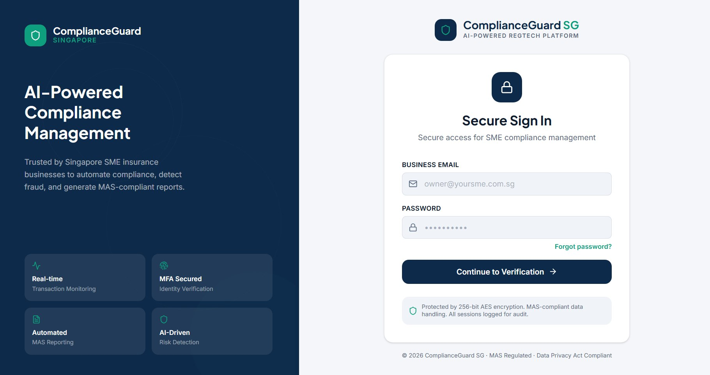
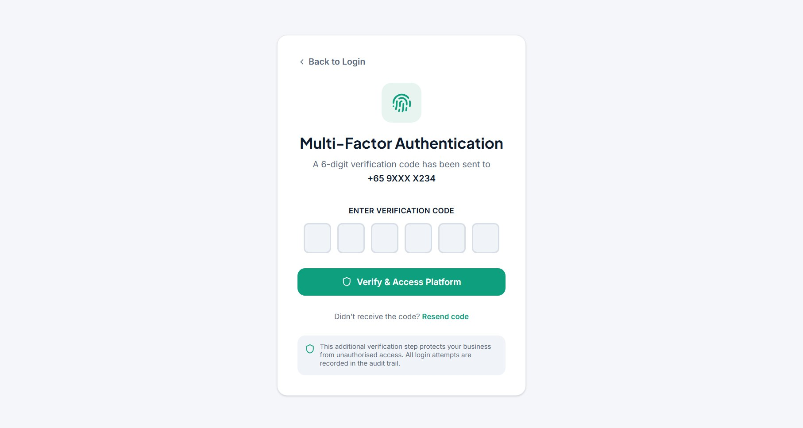
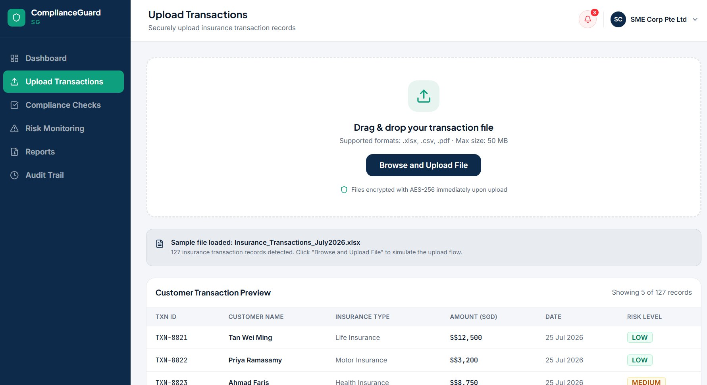
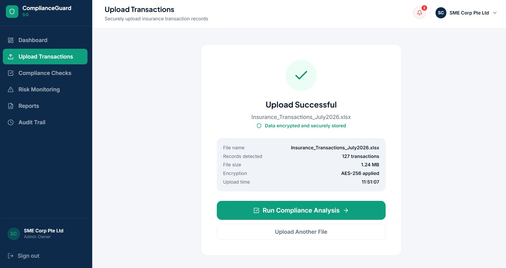
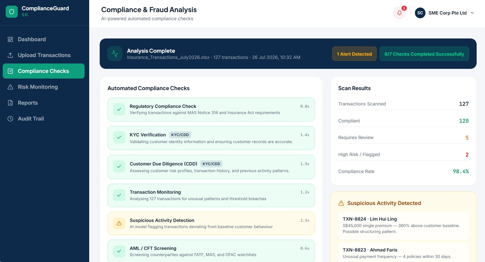
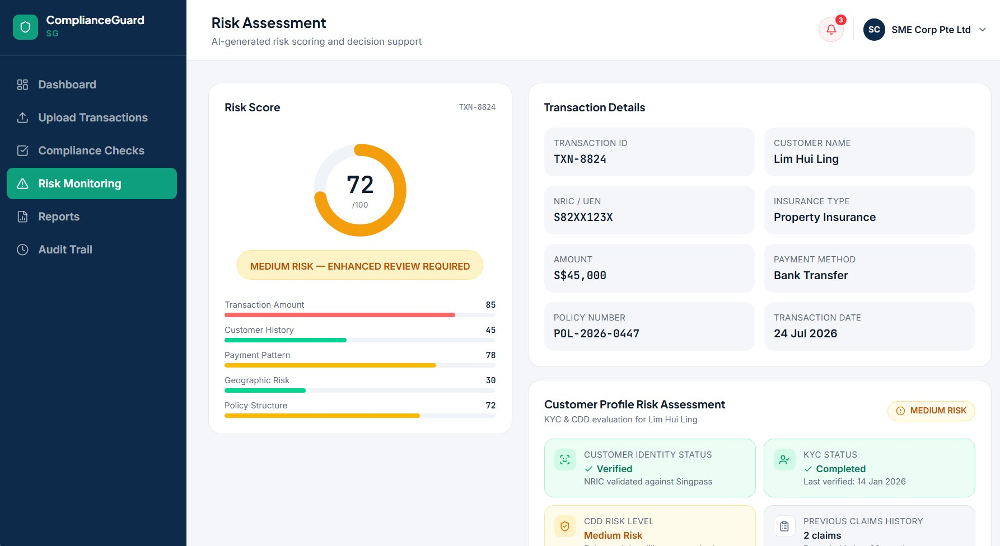
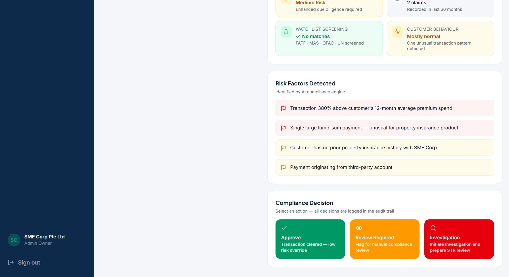

ComplianceGuard SG
Designing a RegTech solution concept to make compliance monitoring and risk review more manageable for smaller insurance businesses.
Project overview
ComplianceGuard SG is a proposed AI-powered RegTech platform for small and medium-sized insurance businesses in Singapore. I designed the concept around the challenge of time-consuming manual compliance checks, identifying unusual transactions and preparing regulatory reports. The aim was to explore how a centralised interface could help staff identify risks and decide what needs further review.
This was a system design and interactive prototyping assessment, not a deployed compliance platform. The sample transaction records, risk scores, analysis results and security indicators shown below illustrate the intended user experience rather than verified production capabilities.

Proposed workflow
The prototype takes a user through secure sign-in and multi-factor authentication, a simulated transaction upload, automated compliance-check results, risk scoring and a decision stage where a staff member can review flagged transactions. The design brings these steps into one workflow instead of treating them as separate tasks.







Key design considerations
- Regulatory compliance: Show how a business might organise compliance checks, KYC/CDD information, AML/CFT screening and audit records in a single interface.
- Risk prioritisation: Present low-, medium- and high-risk categories to help staff focus on cases that may need attention.
- Human oversight: Include explicit review and investigation actions rather than treating an automated flag as a final decision.
- Privacy and access control: Illustrate secure login, MFA and audit logging as design requirements for handling sensitive information.
My contribution
I completed this project individually. I researched the business problem and relevant FinTech concepts, planned the proposed workflow, designed the interactive prototype and storyboard, and documented the system's limitations and potential improvements. The assessment received an A grade.
What I learned
This project helped me connect concepts such as RegTech, transaction monitoring, fraud-risk indicators, data protection and regulatory reporting to a realistic insurance-business scenario. It also taught me to think beyond an attractive interface: a useful compliance solution needs clear review processes, reliable information and appropriate human judgement.
Limitations: The prototype uses illustrative data and simulated functionality. It does not establish that a live AI model, real-time monitoring, MAS certification, production encryption or regulatory approval has been implemented.
Explore the interactive Figma prototype ↗
All interface screenshots are from my academic prototype. Names, transactions, outcomes and compliance claims shown inside the mock-up are examples for demonstration, not statements about a live regulated product.